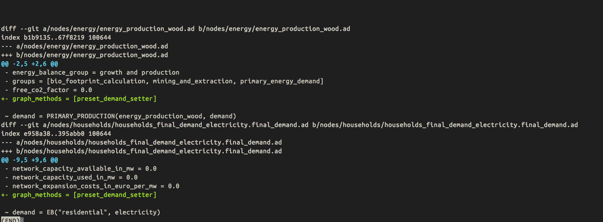
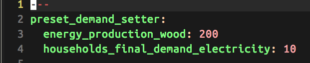
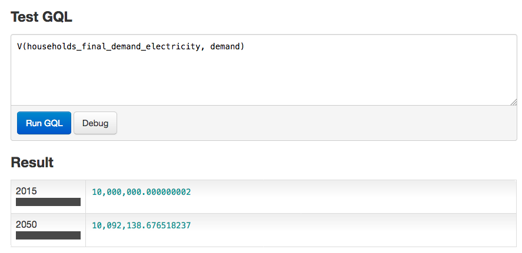
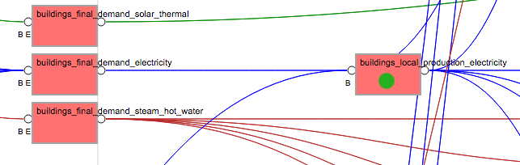
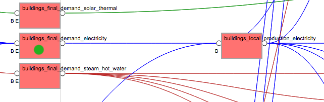
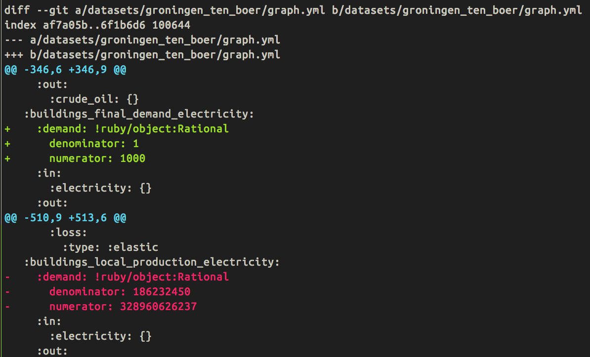
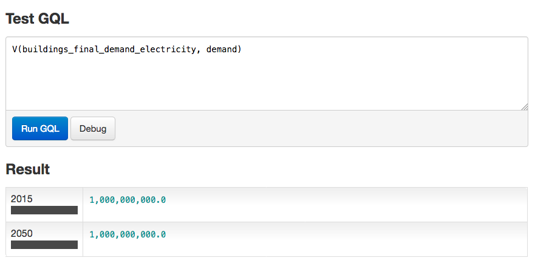

class: center, middle # ETLocal ## Sprint meeting --- # Agenda 0. Preface 1. Overview 2. Initializer methods 3. Next sprint 4. The ETLocal process --- # Preface Provinces, municipalities, districts and neighborhoods have their own unique questions for their energy systems. ETLocal provides a way to get meaningful insight into their current situation and allows to customize and create stable, transparent present situations for usage inside of ETModel. --- # Overview: ``` [ ETDataset ]------------- | [ ETSource ] ----------- | | | V V [ Front-end ] <-> [ Machinery ] <-> [ ETModel ] ``` <hr/> *Machinery* Dependencies: - The front-end (ETlocal), - The chaining to ETModel - The documentation (ETDataset?/Dropbox for that matter) --- # Machinery ``` [ Interface for ETEngine ] <-> [ Dataset ] <->* [ Input from ETLocal ] ``` *Problem:* - Both the interface for ETEngine and the input for ETlocal are 'fluid'. - The interface for ETEngine is being 'solidified' - Initializer methods (or graph methods) are called to life <span style="color:green;">✔</span> - But where do they need to be set? <!-- (in other words: how do we need to initialize the graph?) --> --- class: center, middle # Ideas for initializing the graph locally --- # The candidates: - 1: The existing sparse graph - 1.2: The 'new' existing sparse graph - 2: A new sparse graph? - 3: Halfway-hybrid idea Anthony and me <!--- Tell about pro's and con's --> --- # Preface: *Knowledge I assume to be present:* - There's only going to be a single ETM and therefor a single graph structure - The `graph.yml` is a snapshot of the current scaled sparse graph (of usually NL). - The `graph_values.yml` is a YAML file containing all the initializer methods --- ## 1: The existing sparse graph <span style="color:green;">✔</span> (1/5) 1. We scale NL as it works right now (`rake scale`). 2. We apply the initializer methods only on the spots that are in the graph.yml 3. Refinery calculates a full graph --- ## 1: The existing sparse graph <span style="color:green;">✔</span> (2/5) *Pro's* - We know Refinery can actually calculate this graph - Whenever the graph changes, there's a single rake task already present to correct the foundation. - A user doesn't need to specify everything about the graph (if he/she wants to only tweak one or two values than that is possible). *Con's* - Values in this sparse graph might not directly be practically useable for researchers. - This might cause for a lot of complex data transformations in ETlocal/Transformer --- ## 1: The existing sparse graph <span style="color:green;">✔</span> (3/5) *Prototype:* Whitelist a few nodes which happen to be in the sparse graph:  --- ## 1: The existing sparse graph <span style="color:green;">✔</span> (4/5) *Prototype:* Set the values in the `graph_values.yml`:  --- ## 1: The existing sparse graph <span style="color:green;">✔</span> (5/5) *Prototype:* Profit:  --- ## 1.2: The 'new' existing sparse graph <span style="color:green;">✔</span> (1/5) 1. We scale NL as it works right now. 2. During the scaling we need to calculate "NL scaled full" and cherry-pick values from the full-graph to be exported as defaults for the graph.yml. 3. We apply the initializer methods 4. Refinery calculates the full graph --- ## 1.2: The 'new' existing sparse graph <span style="color:green;">✔</span> (2/5) *Pro's* - Local sparse graph can be completely tweaked to own needs. - Reduces the (likely) need for a lot of complex transformations in ETLocal - A user doesn't need to specify everything about the graph (if he/she wants to only tweak one or two values than that is possible). *Con's* - Refinery can break - Whenever the graph structure changes, there needs to be extra maintenance for this different sparse graph. Somebody needs to do this extra maintenance with energy knowledge (so not me ;)). --- ## 1.2: The 'new' existing sparse graph <span style="color:green;">✔</span> (3/5) *Prototype:* Move a node around in the sparse graph (for demo purposes):  <br/>  --- ## 1.2: The 'new' existing sparse graph <span style="color:green;">✔</span> (4/5) *Prototype:* Move a node around in the sparse graph (for demo purposes) (`graph.yml`)  --- ## 1.2: The 'new' existing sparse graph <span style="color:green;">✔</span> (5/5) *Prototype:* Profit:  <!--- Thoughts: - This does give new changes to the sparse graph. - Heavily conflicts with rule #1 - that there's only one graph - Maybe assume that one graph, means one sparse graph. - So - if the sparse graph changes - why not for all datasets? --> --- ## 2: A new sparse graph? <span style="color:#cccc00;">✔</span> (1/2) 1. We scale NL as it works right now. 2. During the scaling we need to calculate "NL scaled full" and cherry-pick values from the full-graph to be exported as defaults for the `graph_values.yml`. 3. We apply the initializer methods (i.e. overwrite the `graph_values.yml`) 4. Refinery calculates the full graph --- ## 2: A new sparse graph? <span style="color:#cccc00;">✔</span> (2/2) *Works only in theory* *Pro's* - No need for a graph.yml base - Local sparse graph can be completely tweaked to own needs. - Reduces the (likely) need for a lot of complex transformations in ETLocal *Con's* - Refinery can break - Whenever the graph structure changes, there needs to be extra maintenance for this different sparse graph. Somebody needs to do this extra maintenance with energy knowledge (so not me ;)). - A user needs to specify everything about the graph without any inter-sparse-graph-relations. - The "refresh graph" task needs to be rewritten - Dealing with 'odd' values like interconnector capacity, cc_in, cc_out, full load hours? --- ## 3: Halfway-hybrid idea Anthony and me <span style="color:red;">x</span> (1/1) 1. We scale NL as it works right now 2. We take another empty graph (structure only) 3. We calculate the graph of step 1. 4. We take specific values from step 3 and apply them to step 2. 5. Then we apply the initializer methods. 6. It breaks. 7. ... --- class: center, middle # Discussion ---